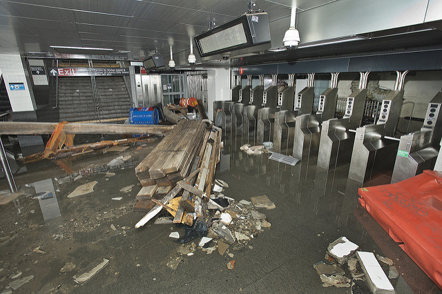

De Blasion Announces $10B Plan to Extend Downtown into East River
On Thursday, Mayor Bill de Blasio announced plans to extend the eastern bank of lower Manhattan into the East River. The plan that will prevent rising sea level and storm surges from flooding downtown, which will be vulnerable to daily flooding for 20 percent of the downtown area by 2120. With events like Superstorm Sandy in 2012 becoming more likely in the future, the city has no choice but to ramp up efforts to combat the natural forces.

“When it comes to New York City, one of the great coastal cities of the world, we are particularly threatened and nowhere is that threat greater than for the hundreds of thousands of people who live and work in lower Manhattan,” said de Blasio. “We had to come to grips with the sheer magnitude of what had to be done and the challenge of making it happen.” De Blasio said that it will be possible to develop new streets and buildings on the new land as well as other public amenities.
The 10 billion dollar plan will be comprised of smaller projects. The Lower East Side, South Street Seaport, Financial District and Battery Park will have flood protection measures in place costing $500 million from the state and federal funds, reaching out to the private sector if needed. Both the South Street Seaport and Financial District are the lowest and busiest sections which will force the city to build outwards and upwards at least 20 feet above current sea level. Two Bridges will have physical walls and deployable barriers, alone costing $200 million. The Battery, wharf, and waterfront esplanade will be lifted and a berm will also be added for protection in storms or surges. In addition to being lifted, Batter park will be reconstructed and redesigned beginning in 2020. Secondary protection measures such as HESCO barriers and dams will be implemented at the end of 2019.